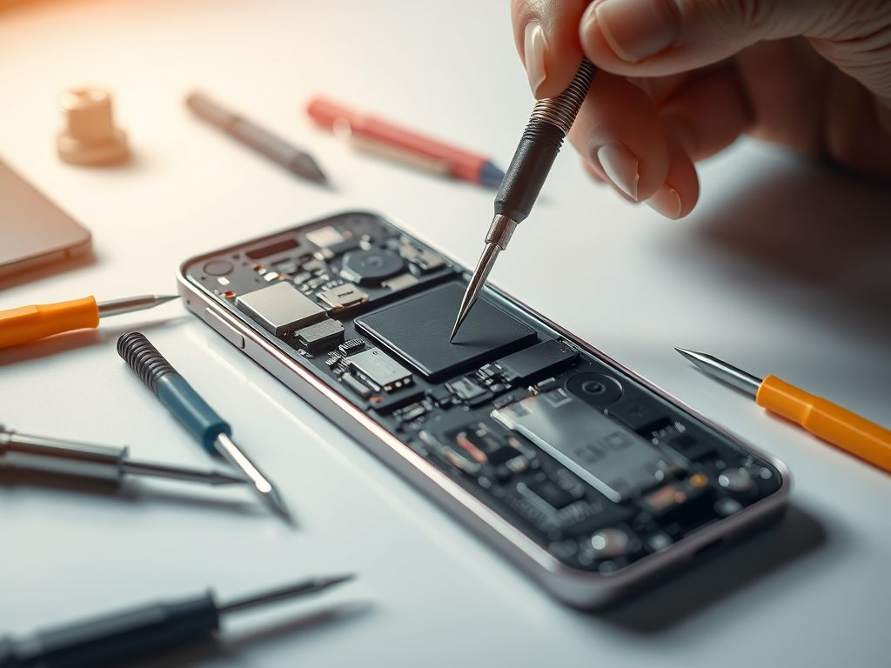

Écran
Vitre fissurée, tactile défaillant ou affichage noir : remplacement de l'écran.
Lundi au dimanche · 8h – 22h
Un service rapide à tarif intéressant, à Épernay et alentours. Les pièces endommagées sont remplacées par des pièces de qualité, testées plusieurs fois et garanties. Je viens chercher votre téléphone chez vous ou au travail.

Services proposés
iPhone ou Android, je remplace les pièces endommagées de votre téléphone par des pièces de qualité.
Vitre fissurée, tactile défaillant ou affichage noir : remplacement de l'écran.
Autonomie en baisse ou téléphone qui s'éteint tout seul : nouvelle batterie.
Châssis tordu, rayé ou dos brisé : votre téléphone retrouve son aspect d'origine.
Le téléphone ne charge plus ou seulement dans une position : réparation du port.
Photos floues, objectif rayé ou caméra qui ne s'ouvre plus, à l'avant ou à l'arrière.
Vous entendez mal vos correspondants pendant les appels : remplacement de l'écouteur.
Son faible, grésillant ou absent pour la musique, les vidéos et la sonnerie.
Des recommandations pour bien utiliser votre batterie et prolonger la vie de vos pièces.
Collecte à domicile
Pas besoin de vous déplacer : je récupère votre téléphone directement à votre domicile ou sur votre lieu de travail.
Planifier une collecte0 €
À Épernay et dans un rayon de 10 km autour de Saint-Imoges.
0,50 €/km
Seuls les kilomètres hors zone sont facturés.
Pourquoi Phone Tech Care ?
Un service rapide à tarif intéressant, des pièces de qualité testées plusieurs fois et garanties, et des conseils pour bien utiliser votre batterie et vos autres pièces.
Demander un devisVotre téléphone réparé rapidement, pour que vous le retrouviez au plus vite.
Réparer reviendra toujours moins cher que d'acheter un téléphone neuf.
Des pièces de qualité, testées plusieurs fois avant d'être installées.
Service proposé du lundi au dimanche, de 8h à 22h.
Avis clients
« La réparation s'est très bien passée, la batterie de mon iPhone 14 a été changée rapidement pour un prix intéressant. »
« Changement de batterie sur Samsung S21 parfaitement réalisé, je recommande. »
Conseils
Dans un monde où la société de consommation nous pousse à acheter toujours plus, faire réparer son téléphone plutôt que de le jeter ou de le garder chez soi permet de réduire son empreinte carbone. Cela permet aussi de s'inscrire dans une démarche écologique et de faire des économies : changer un écran de téléphone reviendra toujours moins cher que d'en acheter un nouveau, surtout si celui-ci était neuf au départ et haut de gamme.
La meilleure option est l'achat d'un téléphone d'occasion ou reconditionné, afin de favoriser l'économie circulaire et de donner une seconde vie au produit.
Un téléphone d'occasion peut être très avantageux et coûter beaucoup moins cher. Attention toutefois à ne pas vous faire avoir lorsque vous achetez le téléphone à un particulier : demandez l'état de la batterie, ainsi que des photos du châssis et de l'écran s'il n'y en a pas sur l'annonce. Demandez aussi si l'écran est d'origine, depuis combien de temps la personne détient le téléphone et pourquoi elle souhaite le vendre.
Un téléphone reconditionné peut être une très bonne option si l'on veut un téléphone fiable qui se rapproche du neuf.
Le prix dépend du modèle et de la pièce à remplacer. N'hésitez pas à m'appeler au 07 81 00 34 01 pour toute question ou pour obtenir un devis.
Je répare les iPhone ainsi que les téléphones Android (Samsung, par exemple).
Contact
Une question ou un devis ? Appelez-moi, du lundi au dimanche de 8h à 22h.
07 81 00 34 01